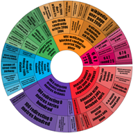
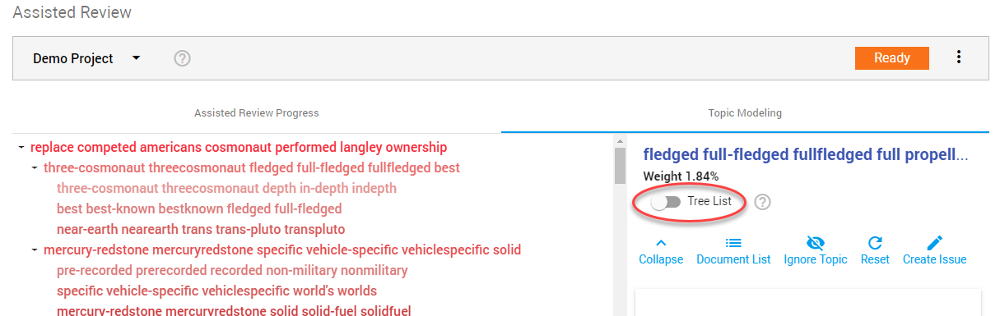
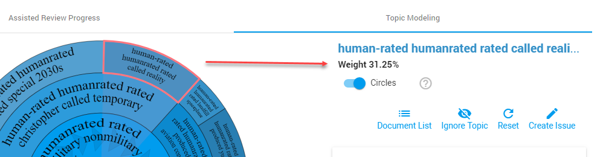

-
Double click on a topic to visually expand it.
Before:

After:


Use Topic Modeling to identify and order the most relevant data. Discover clusters of words (topics) that frequently occur together in order to identify patterns. Topics are the most important words spread across the documents in a project.
The video below is a helpful example:
Select Use Topic Modeling when adding a project to Assisted Review (Note: You cannot add Topic Modeling to an existing project). After the project has been added, in the Topic Modeling tab, you can create an issue (training set) for each topic. This allows you to review diverse sets of potential responsive documents and make predictions for the complete data set.
Topic Modeling tab
Circles or Tree List
Weight
Select a topic to see the weight of it.
The Weight indicates the relative proportion of the number of documents within this topic compared to his siblings in the Circles or Tree List.

Create Issue
Select a topic and click
 to define the information need.
to define the information need.
Ignore Topic
To prevent not responsive topics from dominating the visualization, ignore them:
Select a topic and click


Click to add one ignored topic to the visualization again.
Click  to add all ignored topics to the visualization again.
to add all ignored topics to the visualization again.
Reset
Return to the original visual state by clicking
Also, no topics will be selected/ignored anymore.
Document List
View all documents in your project:
View the documents characterized by a selected topic:
Top terms are highlighted.